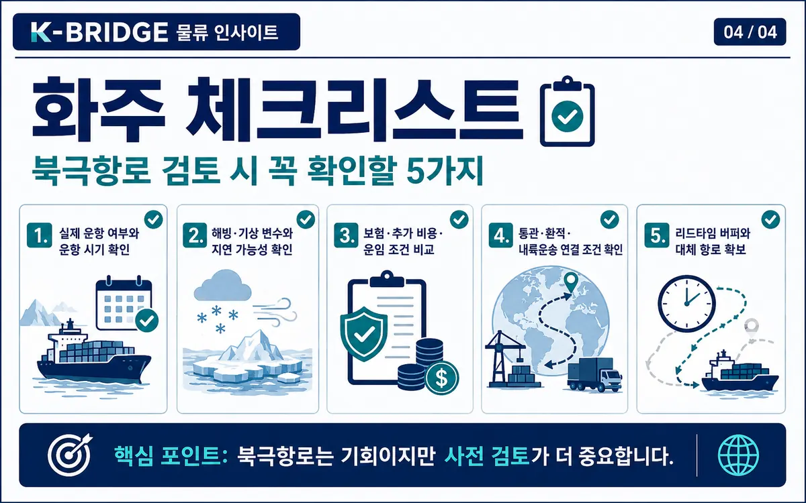

북극항로란? 수에즈보다 최대 32% 짧은 항로,
2026 계절형 정기 서비스와 한국 시범운항
기후 변화로 북극해 통항 가능 기간이 늘어나면서 북극항로가 다시 주목받고 있습니다. 수에즈항로와의 거리·리드타임 차이, 2026년 실제 운항 현황, 한국 수출기업이 확인해야 할 리스크를 물류 실무 관점에서 정리했습니다.

먼저 답부터 보면
북극항로는 ‘연중 수에즈 대체항로’가 아니라, 특정 계절과 화물에서 운송시간을 줄일 수 있는 전략적 보완항로에 가깝습니다.
2026년에는 중국이 계절형 주간 컨테이너 서비스를 확대했고, 한국도 부산발 첫 북동항로 컨테이너 시범운항에 들어갔습니다. 다만 해빙·기상·보험·극지운항 규정과 제재 준수까지 함께 계산해야 실제 경제성이 나옵니다.
대표 비교 기준 거리 단축
동북아–북유럽 구간에서 수에즈항로보다 약 30% 안팎 짧게 제시됩니다.
현재는 계절형 운항 중심
여름·가을의 해빙 조건을 활용하는 서비스가 현실적인 상업 모델입니다.
한국 첫 컨테이너 시범운항
PanStar Acro가 부산에서 출항해 북동항로 실증 운항을 시작했습니다.
1. 북극항로는 정확히 무엇인가요?
‘북극항로’는 북극해를 이용해 아시아와 유럽·북미를 연결하는 여러 항로를 통칭합니다. 물류업계에서 가장 현실적인 상업 항로로 논의되는 것은 러시아 북부 연안을 따라 베링해협과 북유럽을 연결하는 북동항로(Northern Sea Route, NSR)입니다.
북서항로는 캐나다 북부를 통과하고, 장기적으로는 북극 중앙을 가로지르는 횡단항로도 거론됩니다. 하지만 현재 컨테이너 상업운항 논의의 중심은 북동항로입니다.
견적이나 계약 단계에서는 ‘북극항로’라는 표현만 보지 말고 실제 통과 해역, 운항 시기, 선박의 내빙성능과 극지운항 요건을 함께 확인해야 합니다.
2. 수에즈항로보다 최대 32% 짧다는 말은 무엇을 의미할까요?
동북아시아와 북유럽을 동일한 출발·도착 기준으로 비교하면 북극항로는 수에즈항로보다 약 30% 안팎 짧은 거리로 제시됩니다. 일부 대표 비교에서는 최대 약 32% 단축 수치가 사용됩니다.
운송거리가 줄면 항해일수와 연료 소비를 낮출 가능성이 있습니다. 하지만 실제 항차에서는 해빙 상태, 저속 운항, 쇄빙 지원, 허가와 기상 대기가 더해질 수 있기 때문에 지도 위 거리만으로 운송비를 판단하면 안 됩니다.

| 구분 | 북극항로(NSR) | 수에즈항로 |
|---|---|---|
| 항로 거리 | 대표 비교 기준 약 30% 안팎 단축 가능 | 기존 아시아–유럽 주력 항로 |
| 운항 시기 | 현재는 여름·가을 중심 | 연중 운항 |
| 장점 | 거리·리드타임 단축 가능성 | 서비스 빈도·환적망·선복 규모 |
| 핵심 변수 | 해빙·기상·Polar Code·보험·제재 | 운하 혼잡·홍해·지정학 리스크 |
3. 2026년에는 실제 운항이 어디까지 진행됐나요?
2026년의 핵심 변화는 단발성 시험항차에서 계절형 반복 서비스로 넘어가는 움직임이 나타났다는 점입니다. 중국의 China-Europe Arctic Express(CAX)는 8~10월을 중심으로 주간 서비스 확대를 추진하고 있습니다.
다만 현재 북극항로를 수에즈항로와 같은 의미의 ‘연중 글로벌 정기선’으로 보기는 어렵습니다. 운항 가능 기간과 해빙 조건에 따라 시즌이 제한되고, 대형선 투입과 스케줄 안정성도 더 검증해야 합니다.

‘정기선 전환’은 연중 서비스 완성을 뜻하기보다, 한 시즌에 반복적으로 운항해 상업성을 검증하는 단계로 이해하는 것이 정확합니다.
4. 한국도 부산발 첫 북동항로 컨테이너 시범운항을 시작했습니다
한국에서는 2026년 8월 22일 2,758TEU급 PanStar Acro가 부산항신항에서 출항했습니다. 우리나라 첫 북동항로 컨테이너선 시범운항으로, 실제 화물을 싣고 북극해역을 통과해 유럽까지 운송한 뒤 부산으로 돌아오는 왕복 실증입니다.
이번 항차는 화학제품, 중고차, 자동차 부품 등 화물을 포함해 총 837TEU를 싣고 약 45일의 왕복 운항 계획으로 진행됩니다. 단순 통과 여부보다 운항거리·연료소모·운항비용·화물상태·화주 수요 등 실제 데이터를 확보하는 것이 핵심입니다.

5. 북극항로가 곧 수에즈항로를 대체하는 것은 아닙니다
북극항로의 가장 큰 장점은 짧은 거리지만, 운항의 계절성과 변동성이 동시에 존재합니다. 수에즈항로는 연중 운항, 초대형 컨테이너선 투입, 촘촘한 기항·환적망이 이미 구축돼 있습니다.
반면 북극항로는 해빙과 기상, 선박의 내빙성능, 극지운항 전문인력, 보험 조건, 러시아 연안 관할, 국제 제재와 환경규제가 서로 연결됩니다. 따라서 기본 운임이 낮아 보여도 실제 총비용은 달라질 수 있습니다.
- Polar Code: 극지수역 운항 선박의 안전·환경 요건과 선박·운항 기준을 확인해야 합니다.
- 보험: 극지 운항 특성상 보험조건과 추가 위험비용이 일반 항로와 다를 수 있습니다.
- 기상·해빙: 안개, 결빙, 얼음 이동은 일정 안정성에 직접 영향을 줍니다.
- 제재·규정: 금융·보험·러시아 관할 통항과 관련한 제재 준수 여부를 사전에 확인해야 합니다.
6. 한국 물류에는 어떤 기회가 있을까요?
부산항 집화·환적
한·중·일 화물을 부산에 모아 계절형 북극항로로 연결할 수 있다면 동북아 집화 거점 역할이 확대될 수 있습니다.
조선·MRO
내빙선박, 극지운항 장비, 친환경 연료, 유지보수 등 한국 조선·해운 서비스의 연계 기회가 커질 수 있습니다.
납기 민감 화물
자동차 부품, 배터리·에너지 장비, 계절상품처럼 운송시간 단축 가치가 큰 화물부터 테스트하기 좋습니다.
초기에는 전체 물량을 한 번에 전환하기보다 납기 민감 화물 일부를 비교 운송해 실제 리드타임과 총비용을 축적하는 방식이 현실적입니다.
7. 화주·물류 담당자가 선적 전에 확인할 체크리스트
- 실제 운항 여부와 시즌: 발표된 계획이 아니라 예약 가능한 실제 항차와 출항일을 확인합니다.
- 해빙·기상 변수: 지연 가능성과 스케줄 변경 시 대체 계획을 함께 확인합니다.
- 보험·추가 비용: 기본 운임 외 극지운항·보험·지원비용까지 포함해 총물류비를 비교합니다.
- 통관·환적·내륙운송: 유럽 기항지 이후 최종 목적지까지 연결 조건을 확인합니다.
- 리드타임 버퍼: 북극항로가 지연될 경우 사용할 대체 항로와 다음 가능한 선박을 미리 확보합니다.

새로운 항로일수록 ‘가장 짧은 거리’보다 총 리드타임·총비용·예비 루트까지 포함한 도착 안정성을 기준으로 선택하는 것이 중요합니다.
8. 자주 묻는 질문
Q. 북극항로는 정말 수에즈항로보다 32% 짧나요?
A. 대표적인 동북아–북유럽 비교에서는 약 30% 안팎, 일부 비교 기준에서는 최대 약 32% 짧게 제시됩니다. 실제 항차 거리는 출발항·도착항과 해빙 조건에 따라 달라집니다.
Q. 2026년부터 북극항로가 연중 정기선이 된 건가요?
A. 아닙니다. 중국은 8~10월 중심의 계절형 주간 서비스를 확대했고, 한국은 PanStar Acro 시범운항 단계입니다. 수에즈항로처럼 연중 동일한 빈도의 간선노선과는 아직 차이가 있습니다.
Q. 한국 화주가 지금 바로 북극항로로 전환해도 될까요?
A. 납기 단축 가치가 큰 일부 화물은 검토할 수 있지만, 실제 선복, 보험, 극지운항 규정, 제재 준수, 기상 지연과 대체항로까지 함께 확인해야 합니다.
Q. 가장 큰 리스크는 무엇인가요?
A. 현재는 계절성과 일정 변동성입니다. 여기에 해빙·기상, 보험, 선박 요건, 제재와 환경 규제가 함께 작용하기 때문에 총비용과 정시성을 동시에 봐야 합니다.
자료 기준 및 출처
- 대한민국 해양수산부, 우리 컨테이너선 북극항로 시범운항 관련 공식 발표, 2026-08.
- International Maritime Organization (IMO), Polar Code / Shipping in polar waters.
- 중국의 2026 China-Europe Arctic Express 계절형 서비스 관련 공개 자료 및 주요 보도.
- 한국 PanStar Acro 북동항로 시범운항 관련 공개 자료 및 주요 보도.
※ 본 콘텐츠는 2026년 8월 26일 기준 공개된 자료를 바탕으로 작성했습니다. 실제 항차·운항기간·보험·제재·통항 조건은 예약 시점에 선사와 포워더를 통해 다시 확인해야 합니다.
유럽향 화물, 북극항로가 실제로 유리한지 비교해보세요
케이브릿지는 화물 특성, 납기, 선복, 항로 리스크를 기준으로 수에즈·희망봉·북극항로·복합운송 대안을 함께 비교합니다.
국제물류 상담 문의